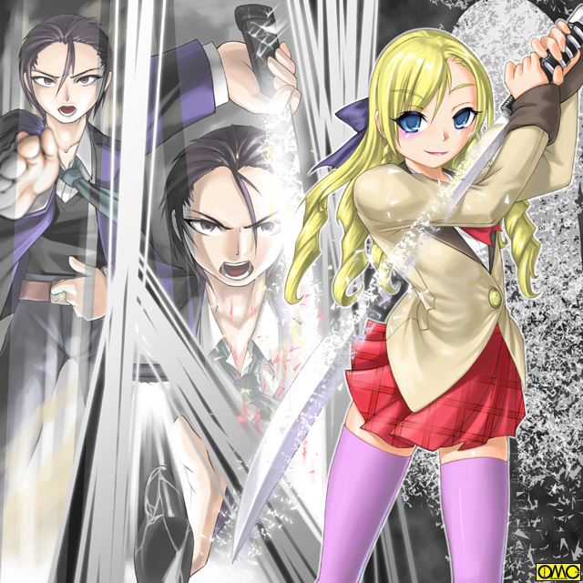

清良が覚醒するより早く戦場と化していた王真市。
そこに存在する王真高校に続く道。その人気のないところで一人の少年が三人の少年に道を阻まれていた。
「数をそろえれば勝てると思ったか？」
ブレザー。黒いスラックスの少年。オールバックゆえに年齢より上に見える。
行く手を阻まれた少年は小ばかにしたように笑う。
三人のガクランの少年は意思のない瞳をしていたが、憎悪に近い光をたたえて異形の女へと姿を変える。
小柄な少年。三条はつばめによく似たそれに。
大柄な少年。亀井は名の通り陸ガメの異形に。
二人の中間くらいの少年。鹿島は小さな角の鹿の怪人へと。
「アマッドネスに魂を売り渡したか。だが貴様らザコでは話にならん」
ブレザーの少年は右腕を肩の高さで突き出し、同時に左手をへその位置に。
すると光の渦が発生。中から「刀」のつかが出現。それを引き抜き持ち替えて左の腰だめに。
瞬時に右手をつかにかけ
「変身」
刀を抜いた。その瞬間の隙を狙ってスワロー。タートル。ガゼルのアマッドネスたちは襲い掛かる。
スワローアマッドネスは高々と舞い上がり高速を生かして襲い掛かる。
タートルアマッドネスは強固な甲羅で防御に自信があるので、怖れず立ち向かう。
そして身の軽さで攻め立てるガゼル。
だが変身したブレザーの少女に小太刀で簡単に遮られる。
「キャストオフ」
さすがに３体相手ゆえに早くも攻撃重視の姿に。
小太刀が変化した通常サイズの刀でガゼルに一太刀を浴びせる。
そのままタートルの甲羅に守られていない部分を斬りつけ怯ませる。
「超変身」
姿を変えた。目にも留まらぬ速さのスワローアマッドネスがそれに迫る。
だが微動だにしない。
すれ違う刹那。刀を抜いて一閃。ぐるりと回して円を描く。
それがスワローの首。そして足を断ち切る。文字通りの「つばめ返し」だ。
そのままタートルに迫る。とっさに甲羅に首と手足を引っ込めて守りに入るタートル。
少女剣士は再び姿を変えた。刀も巨大なそれに。
それを大上段に振り上げ、一気に力任せに甲羅ごと叩き切る。
さらにキャストオフ直後の姿。ヴァルキリアフォームへと戻ると、カゼルアマッドネスに続け様の剣撃。
存分に斬りつけると、血を払うように一振り。
刀を鞘に収めた瞬間に三体のアマッドネスは爆発した。
少女剣士はその姿のままつぶやく。
「貴様ら如きにこの剣の戦乙女。ブレイザを討ち果たせるものか」
戦乙女セーラ
ＥＰＩＳＯＤＥ１１「自尊」
翌日。学校が終わってから清良は王真高校へとキャロル・バイクモードで出向いていた。
当初は黒猫の姿のまま道案内だけさせるつもりだったが、有事の際に側にいた方がよいのと、直接運んでしまった方が手っ取り早く清良をその背中に乗せた。
学校が見えてところで停車。他校生がバイクで乗り付けてはトラブルが起きないほうがおかしい。
ましてや何かと突っ掛かってくる相手の多い清良の見てくれもある。
ノーヘルで走っていて警察まで相手にする羽目になった経験から、きちんとヘルメットを着用している。
フルフェイスヘルメット。その口元の部分を外して彼はつぶやく。
「ここか」
被っていたヘルメットを脱いでバイクの上に置くと、それが一瞬にしてバイクと同化する。
キャロルが自分の一部を分離してヘルメットにしていたのである。
だから市販されているものより軽くて強い。視界も広く確保されている。
「あの……セーラ様？ ブレイザ様も何かとお忙しくていわゆる『アポなし』ではあえるまで時間が掛かると思いますが」
「アポなしの方がいいんだよ。初めから俺が行くとわかっていれば身構えるだろうからな」
またがっていたバイクから降りる。
「しかしそんな試すようなマネを」
キャロルも瞬間的に黒猫の姿に。
一人での戦いに限界を感じた清良は仲間を欲した。
せめて情報交換。そして同じ身の上の相手を見たかった。
「キャロル。前の闘いの時のセーラ。ブレイザ。ジャンスは同胞で親友だったかもしれないが、俺はその伊藤礼（いとう れい）と言う奴はまったく知らないんだよ」
伊藤礼。それがブレイザの普段の姿の時の名前。
清良同様に男として生を受け、その名と性別で高校二年まで生きてきた。
「だから素の状態を見たい。仲間にするかどうかはそれから決める。大体キャロル。お前何か隠してないか？ ジャンスとあうのを止めていたが」
「そ……それはおいおい。ところでセーラ様。それならどうやって？」
「決まっている。このまま乗り込む」
大またで歩き出す清良をキャロルが慌てて止める。
「そんなことをしたらそれこそトラブルの元ですよっ」
「だからいいんだよ。怒ればそれだけ素の状態が見える。どんな奴か良くわかる。お前の話じゃ一年のときから生徒会の副会長をしているそうじゃないか。そんな奴ならケンカ売りにきた奴にも対応するだろ」
「印象をいきなり悪くしてどうするんですっ？」
「じゃどうすんだよ？」
「そうですねぇ」
どうも初めから別案があったらしい。
それを提案された清良は苦虫を噛み潰した表情になるが、その方がより伊藤礼を観察できると考えて、嫌々ながら案を受け入れた。
物陰に隠れていつもより素早くポーズを取る。
「変身」
声もはるかに小さい。一瞬にしてセーラー服姿の美少女に。
「それから」
その容姿に相応しい可愛らしい声でつぶやくと、セーラは下校している女子生徒たちを観察した。
意識をこめる。福真高校の女子制服に似たセーラー服が、王真高校の女子制服のブレザーに変化する。
エンジェルフォームの時は衣類を自在に変えられるのを利用して変化させた。
ガントレットも目立たないリストバンドに変化させ、さらに袖に隠れる。
「どうだ？」
「はい。とってもお似合いです。セーラ様」
「違うよ。間違いないかと聞いてるんだ？」
「問題ありません。その姿なら校内に紛れ込めます」
「下校する連中ばかりなのにわざわざ戻る女もいるかって気はするが……」
「普段のお姿。しかも他校の制服で乗り込むよりはよほど目立ちませんよ」
「それもそうか」
「私は校内に入ると目立つので外から念話でサポートしますが」
「ああ。じっくり観察するさ」
作戦遂行。セーラは王真高校へと歩き出す。
校内に入ったら女子生徒のふりをして「副会長はどこ？」と尋ねて探すつもりだったが当てが外れた。
手間が省けたというべきか。
何しろ当の本人が校門の前にいた。
身長は高い。恐らくは１８０はあるだろう。
細身で細面。歳に似合わぬオールバック。だがそれが知的な印象を醸し出している。
しかしたたえた笑みがいささか小ばかにした印象があるのは性格なのか。
服装は当たり前だが制服であるブレザー姿。
まだ春先と言うこともありワイシャツの上からベストを着込んでいる。
その上から濃紺のジャケットを着ている。スラックスは黒。革靴。
服装はオーソドックスだが手にした木刀が異様な印象を与える。
だがそれもやむなしと言うことは理解できる。
なにしろナイフを手にした暴漢が相手なのだから。
「釜本とか言ったかな？ それで何を切るんだ？ リンゴか」
皮肉のたっぷりこもった一言。遠巻きに見ている生徒たちが笑う。
釜本と呼ばれた男はやはり学生服。病的に細身の男。人相も悪い。
「決まってんだろ。副会長様の心臓だよ」
先に暴漢が「切れた」。脅しではなく本気で心臓をえぐるべく襲い掛かる。
「やばい」
瞬間的にセーラは変装をといてエンジェルフォームで止めに入ろうとする。
だが無用だった。
振りかざしたナイフを礼は正確に右手首を叩いて落した。
比較的華奢な手首を振り下ろしたところに振り上げた木刀が直撃してはたまらない。
「うぎゃあああーっっっっ」
悲鳴を上げる。だが容赦なく次の攻撃。胸のど真ん中を木刀で突く。
「がはっ」
上体を突かれた為にそのままのけぞって後方に倒れる。哀れにも白目をむいて気絶する。
その途端に歓声が沸きあがる。彼がこの高校でのヒーローであることを示している。
（す……すげえ）
セーラは素直に感心した。だがなんとなく礼を好きになれそうもないのも感じていた。
「ふん。返り討ちにされ続けて逆恨み。単身乗り込んできた度胸は褒めてやるが、大方は部下にも愛想をつかされたのだろう」
死者に鞭打つという一言。そういう部分が原因だろう。
彼は木刀を自分の足に寄りかからせると、ポケットからウェットティッシュを取り出して丁寧に手をふき始めた。
直接触れていないのにやるところを見ると相当な潔癖症だ。嫌味なほどに。
「剣道部の助っ人がある。後始末は任せるよ」
彼は踵を返して校内へと。セーラもこっそりと後をつける。
そこから後の「大活躍」はセーラもあきれ果てた。
剣道部の試合では大将に座り、敵の先鋒に副将までが破れたところから、逆に五人抜きをしてのけた。
それから急いで着替えて野球部の助っ人。
代打ホームランを決めると交代して、軽音楽部の校内ライブに一曲だけ参加。
見事なギターテクニックを披露。
果ては漫画研究会の同人誌に（さすがに事前に製作だが）プロ級のイラストを提供する。
（ああいう人を完璧超人って言うのね）
既に女性化してしまったていたのもあり、女の目で見ていたセーラの評価である。
縛られて警察に引き渡すのをまっていた釜本。
だがそこにアマッドネス。ティスの魂が。
「かはっ」
ぴくっと痙攣する。一同が注目する中で釜本が変化する。
よどんだ目が巨大な複眼へと変化する。
頭の形も逆三角形に。
元々細身だったが、さらに細く。
女性のシンボルと言うべき大きな胸が盛り上がる。
「ば…化け物」
監視していた生徒もさすがに逃げ出す。
釜本…マンティスアマッドネスは強力で戒めを振りほどいて校内へ。
「そこの君。見かけない顔だが、どうして俺を付回す？」
人気のない廊下で背中を向けたままセーラに声をかける礼。
（いけない。ばれてたんだわ）
逃げようかとも思ったがむしろ人間性を見るにはちょうどよい。そのまま対応する。
「あはっ。ごめんさなぁい。あたし、会長のファンなんですぅ」
自分でビックリするほどの「ぶりっ子」。
普段の反動か。セーラは女性の精神になると過剰に可愛らしく振舞うところがある。
「あ。ごめんなさい。副会長でした」
「大した問題じゃない。いずれは生徒会長にもなるからな。俺が落ちるはずもない」
（うっわー。自尊心の塊。あまり好きになれないタイプだわ）
完全に女性化しているのか「タイプ」とまで考えるセーラ。
「それより君。俺のファンか。それなら」
瞬時に距離を詰め左腕でセーラの華奢な腰を抱き寄せる。
そして右手でそのあごをひょいと持ち上げる。
「俺とこうなりたいと思っていたんじゃないか？」
（あ…ああ…）
いい男に間近で色気のある声でささやかれ、セーラの中の「オンナ」が大きくなる。抵抗できない。
礼の唇が近寄ってくると、女としてのメカニズムで自然と目を開けていられなくなる。
（だ…だめ…あたしは…）
女としてキスをしてしまうのは清良としてのアイデンテティの崩壊になりそうな気がしていた。
救いは意外なところからきた。
「伊藤ーっっっっっ」
どうやら校門からジャンプして窓を突き破り教室に。
そして手当たり次第に探すつもりで扉を切り裂いて出てきた。
「ふんっ。やはり憑かれたか。ちょっと隙を見せると簡単に乗ってくるよな」
言うなり「囮」としていたセーラを「安全地帯」に突き飛ばす。
そして左手をへその前に。右手は肩の高さで前方にまっすぐと。
礼はへその前に出現した光の渦から出現したつかを取ると引き抜く。
そのままマンティスアマッドネスの攻撃に対して弾くように振る。
意外に強力な一撃で弾かれるカマキリ女。
その隙に手にした小太刀を持ち替えて腰だめに。
突き出していた右手をつかにかけ
「変身」
声と同時に抜くと光り輝く刀身が。
その眩い光の中で礼が変わる。
精悍な顔が美女のそれに。
オールバックの黒髪がブロンドのロングヘアに。
縦ロールまであるせいか「お嬢様」の印象だ。
プロポーションも変わるのだが身長と比較すると胸元は若干寂しい。
左前だったブレザーが女子用の右前のものに。
ネクタイがリボンに変化。
スラックスがどんどんと短くなり融合。赤いプリーツスカートへと変化する。
革靴がローファーに変化していた。
変身を完了した彼女は剣を高々と掲げ上げて名乗りをあげる。
「剣の戦乙女！ ブレイザ」

このイラストはＯＭＣによって作成されました。
クリエイターのていくあうとさんに感謝！